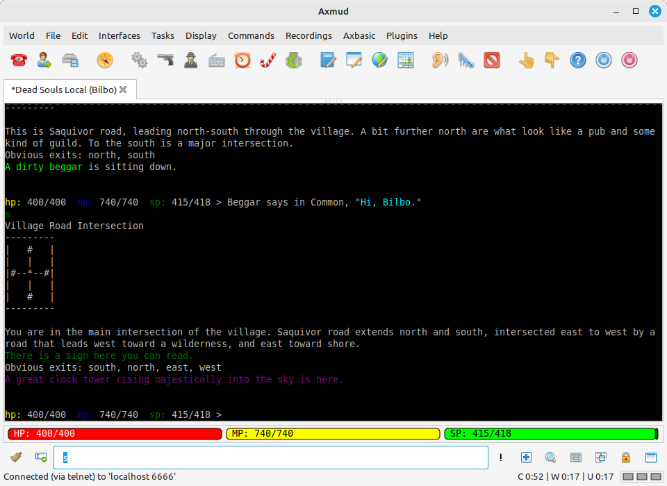
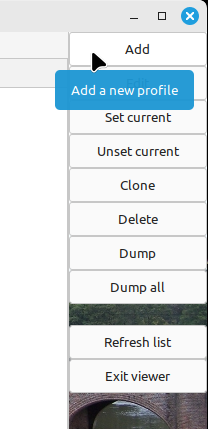
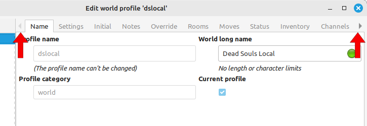
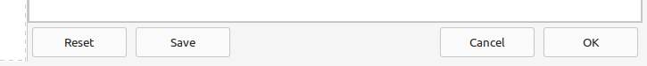
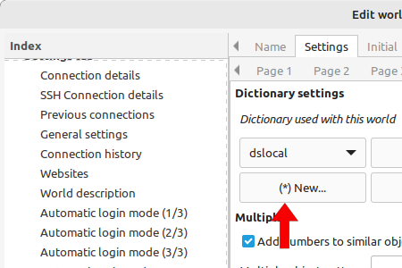

Instructions can be entered in the command entry box at the bottom of the window. There are several kinds of instrcution, some of which are disabled by default.
World commands are those which are sent to the world:
kill orcs
score
get torch
drop trousers
Client commands begin with a semicolon character ( ; ) and are not sent to the world:
;about
;sound on
;openautomapper
;addtrigger -s <kills you> -p <viciously murders you> -rw 1
There are over six hundred client commands. One of the most important one is ;help, which shows a list of all available client commands:
;help
You can get more information about each client command and how to use it:
;help about
;help sound
;help openautomapper
;help addtrigger
You can also get a list of client commands related to a particular topic. For example, to get a list of client commands used with triggers:
;searchhelp trigger
Almost all client commands can be abbreviated. Here are the possible abbreviations for the ;openautomapper command:
;openautomapper
;openmap
;map
;oam
Abbreviations can even be used with ;help. There are several ways to get help for the ;addtrigger command, including:
;help addtrigger
;help addtrig
;help atr
;h addtrigger
;h atr
Client commands in their abbreviated form are called user commands.
User commands are customisable - you could replace ;map with ;wibble, if you really wanted to. For more information:
;help addusercommand
The semicolon character ( ; ) is also used to send multiple world commands. For example, to travel from one place to another, you might type
n;n;ne;ne;n;ne;e;e;ne;n;enter gate;in
Axmud will split this line into individual world commands, and send them one at a time. (This default behaviour can be changed, if necessary.)
There is one more type of world command. A forced world command one which begins with two commas ( ,, ):
,,kill orcs
Any command that starts with ,, is always treated as a world command - so, if you need to send something to the world that looks like a client command, just put ,, before it.
,,;help
Commands beginning with ,, are never split before being sent to the world. This is useful for sending commands containing smileys, that would otherwise get split into two commands:
,,say hello ;) how are you doing?
Besides world commands and client commands, Axmud offers commands called echo, perl, script, multi, speedwalk and bypass commands.
These types of command start with a different special character; for example, speedwalk commands start with a full stop/period character ( . ) and script commands begin with an ampersand character ( & ).
All commands except world and client commands are turned off by default (unless you turned them on when the setup wizard window was open). See Section 4.4 for more information about them.
There are a few important client commands which need to be explained, before we continue.
;login
This command can be used if the automated login process fails, or if it didn't start in the first place.
Axmud provides a number of built-in tasks - useful scripts which often run in their own task window. Most built-in tasks won't start until the character is marked as 'logged in'. Use this command to tell them it's safe to start.
;sound on
;sound off
Some tasks are capable of playing sound effects. The ;sound command turns Axmud's sound effects on and off in all sessions.
;playsoundeffect
If you don't want to wait for a task to play a sound effect, you can use this command to test it's working. The command plays a random sound effect.
;speech on
;speech off
This command turns Axmud's text-to-speech capabilities on and off in all sessions. If you're using settings customised for visually-impaired users, it should already be turned on.
;speak Hello world
Use the ;speak command to test that text-to-speech is working.
;quit
This command disconnects you from the world. All of the current world's data is saved; it is automatically loaded again the next time you connect to the world.
Data is also saved when the connection closes naturally - for example, when you send the quit command to the world. (This default behaviour can be changed, if necessary.)
;qquit
This command (which starts with two letter Qs) terminates the session, but does not save its data.
;panic
;boss
These commands terminate every session immediately and do not save any data.
;save
This command saves the world's data without terminating the session.
;save -a
This command saves data in every session, without terminating any of them.
;autosave on
It would be quite inconvenient to have to type ;save every time Axmud's internal data is modified. The ;autosave command turns on Axmud's auto-save feature, which saves files every five minutes by default.
As mentioned above, client commands are always available, but other kinds of instruction (such as speedwalk commands) are turned off by default, unless you turned them on when the setup wizard window was open.
Use this command to turn echo commands on or off:
;togglesigil -e
Echo commands begin with a double quote ( " ) character. Everything after this character is displayed in the main window, and in the same colour used for system messages (which is yellow by default). For example:
"Hello world!
Use this command to turn Perl commands on or off:
;togglesigil -p
Perl commands begin with a forward slash ( / ) character. Everything after this character is executed as a mini-Perl programme. The programme's return value is then executed as an instruction.
Axmud users triggers whose behaviour can sometimes be unexpected. For this reason, and for your own security, Perl commands have limited functionality (for example, it's not possible for a wayward trigger to accidentally execute a Perl command that deletes everything on your hard drive).
For those of you familiar with the Perl 5 language, here's an example of a trivial Perl command that sends an arbitrary world command to the current world.
/my $string = "kill orcs"; return $string;
Echo commands and Perl commands aren't very useful when they are typed in the main window, but they are very useful when creating triggers (see Section 7.1).
If you want to run Perl scripts with full functionality, you can use plugins (see Section 13).
The forward slash character is used by some worlds for other purposes, so if you don't need Perl commands, you should probably leave them turned off.
Axmud comes with its own scripting language, Axbasic (see Section 10). Script commands are a convenient of starting an Axbasic script.
Use this command to turn script commands on or off:
;togglesigil -s
Script commands begin with an ampersand ( & ) character. The character should be followed by the name of an Axbasic script. For example, these two instructions both run the hello.bas script:
;runscript hello
&hello
Use this command to turn multi commands on or off:
;togglesigil -m
Multi commands begin with a colon ( : ) character. Everything after this character is executed as a forced world command in multiple sessions, for example:
:shout I'm going for lunch
By default, multi commands are applied to all sessions, but they can optionally be applied only in sessions with the same world profile.
Use this command to turn speedwalk commands on or off:
;togglesigil -w
Speedwalk commands begin with a full stop/period ( . ) character. Everything after this character is interpreted as a set of movement commands to send to the world. For example, these two instructions have the same effect:
north;north;north;west;south;south
.3nw2s
Axmud speedwalk commands are actually quite powerful. The syntax, which is a hybrid of those used by other major MUD clients, goes far beyond merely sending "north" and "south".
For a full description of speedwalk syntax, see the help for the ;speedwalk command.
Use this command to turn bypass commands on or off:
;togglesigil -b
Bypass commands begin with a greater than ( > ) character. Everything after this character is sent to the world immediately.
This can be useful if you've placed a limit on how many world commands Axmud can send at a time. This is called slowwalking.
Slowwalking can be configured with the ;slowwalk command. It applies a maximum number of instructions that can be executed at a time. Any excess instructions are stored temporarily until they can be sent; a bypass command literally bypasses that queue.
We've mentioned that speedwalk commands can be turned on or off, but actually it's only the initial character which is turned on or off. Speedwalking is always available using the equivalent client command, ;speedwalk.
.3nw2s
;speedwalk 3nw2s
The two commands above are equivalent, but the first one will only work when speedwalk commands are turned on.
This applies to other kinds of instruction, too. See the help for ;echo, ;perl, ;multi and ;bypass.
The main window contains a number of buttons for common tasks. You can see what each button does by letting your mouse hover above it.
Here's a summary of the most important buttons.
Opens another Connections window, from which you can connect to another world
 Opens the automapper window
Opens the automapper window
Opens a window which displays various help files
Terminates the current connection, or closes the client if there are no sessions open
 Clears the command entry box. If commands are being sent to the world, one character at a time, clicking this button tells Axmud that you're about to start typing a new world command
Clears the command entry box. If commands are being sent to the world, one character at a time, clicking this button tells Axmud that you're about to start typing a new world command
Axmud provides three entry boxes. The main one, which is always visible, is where you type commands. The other two are optional; you can make one or both of them appear if you keep clicking this button.
Anything you type in the other boxes is added to a world command before it's sent to the world. For example, if you want to have a long conversation, you can type say in the box on the left - then, you don't need to type say every time you type something in the main box.
This only works with world commands. It doesn't work with other types of command, such as client commands, speedwalk commands or forced world commands beginning with ,,.
Opens the Session Console window. If Axmud is unable to display system messages in the main window (for whatever reason) they're displayed here instead
 Opens the Quick Input window, from which you can send multiple lines of text to the world at a time.
Opens the Quick Input window, from which you can send multiple lines of text to the world at a time.
 Opens a search box, which you can use to search text for terms like gold or big hairy orc. If you click the Use regex button, you can use a pattern/regular expression like \d+ gold coin).
Opens a search box, which you can use to search text for terms like gold or big hairy orc. If you click the Use regex button, you can use a pattern/regular expression like \d+ gold coin).
 Stops the window from scrolling when text is received from the world
Stops the window from scrolling when text is received from the world
 Splits the window into two portions
Splits the window into two portions
Axmud organises its internal data into collections of data called 'objects'.
We've already seen two kinds of object - the world profile, which stores data for a particular world, and the character profile, which stores data for a character in that world.
There are many other kinds of object. Axmud lists many of them in its object viewer window.
To open the object viewer window, either click on the button, or select 'Display > Open object viewer' in the menu, or use the client command:
;openobjectviewer
;oov

The different types of object are listed on the left. There are far too many to fit inside the window, so they have been divided into groups.
On the right is a strip of buttons; each one is the equivalent of a client command.

Each collection of data - each object - can be viewed and edited using an edit window.
Edit windows can be opened from the object viewer window, or from the main window's menu and buttons, or by using a client command. For example, to edit the dslocal world profile:
;editworld dslocal
;ewo dslocal
If you don't specify a world profile, the current world profile is edited:
;editworld
For world profiles, there are more tabs than can be arranged in the single window. Near the top-left and top-right corners of the window you'll see some kind of arrow; click the arrows to scroll through the additional tabs.

Changes you make in this window are not applied until you use one of the buttons at the bottom.

For technical reasons, some changes have to be applied immediately. Buttons marked with an asterisk - such as the New button pictured below - apply a change immediately. Using the main Cancel or 'Reset' buttons won't reverse these changes.

Preference windows are a special kind of edit window in which all changes are applied immediately. For that reason, the buttons don't use asterisks. Instead, there is a single OK button at the bottom of the window which closes it.
There are two preference windows you'll use often - one for settings that apply to all sessions, and another which applies to a single session.
The client preference window can be opened from the main window menu (click Edit > Axmud preferences...), or by using a client command:
;editclient
;edc
The Connections window lists all of the world profiles you've created, as well as any pre-configured worlds. You can choose which worlds should appear at the top of this list.
Axmud can write a number of different logfiles simultaneously.
Logging is turned off by default. You can use the client preference window to turn it on and to specify which kinds of logfile to write.
Axmud stores all of its data in a directory (folder) called axmud-data. This directory can be found somewhere in your usual home directory (on MS Windows, it's called something like 'Documents').
These are not the only logfiles Axmud can write; each world profile specifies its own logfiles.
Axmud displays its system messages in bright yellow by default. If you find this uncomfortable, the colour is easily changed.
The session preference window can be opened from the main window menu (click Edit > Session preferences...), or by using a client command:
;editsession
;eds
In the next Section we'll use this window to create and modify triggers, aliases and so on.
A few of the most common configuration options have been grouped together in a single window.
;editquick
;edq
Axmud stores data files in a location that depends on your system, and also on how you installed Axmud on that system.
If you want to stored data in a different location - on a USB stick, or an external hard drive, for example - you can use this command:
;setdatadirectory
;sdd
If you use Axmud on multiple devices - a desktop and a laptop, for example - you can set the location to a network drive that both devices can access.
Note that you shouldn't use both devices simultaneously - if you try, Axmud on one device will arbitrarily overwrite filed saved by Axmud on the other device.
(If you don't have your own network drive, or don't know how to set one up, you might like to use a commerical service like Dropbox).
If you want to make a backup copy of the data directory - a wise decision, in many cases - you can do that manually, or you can use a client command.
This command will create a backup copy of the entire data directory:
;backupdata
;bud
When you're ready to restore files from the backup, you can do it manually, or use the client command:
;restoredata
;rsd
If you want to make periodic backups, you could use the ;autobackup command, but it's probably easier to use the client preference window, for example: